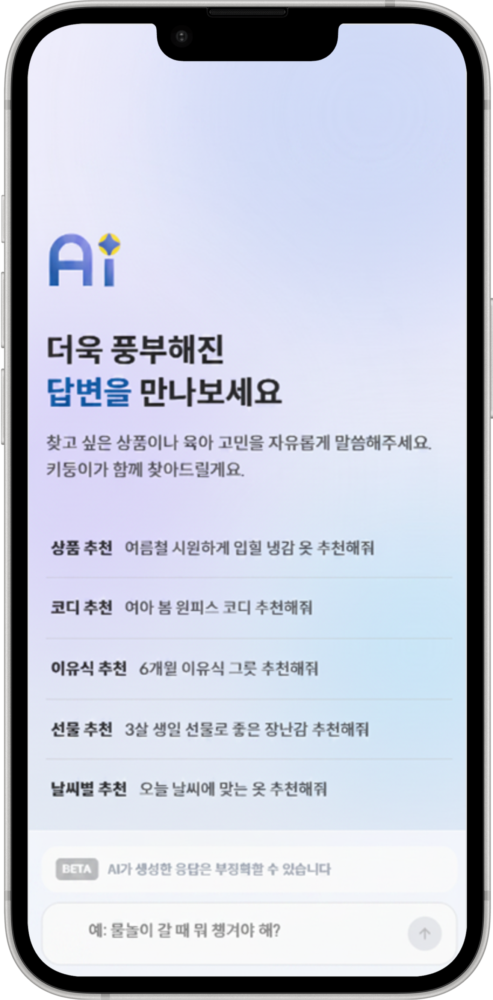
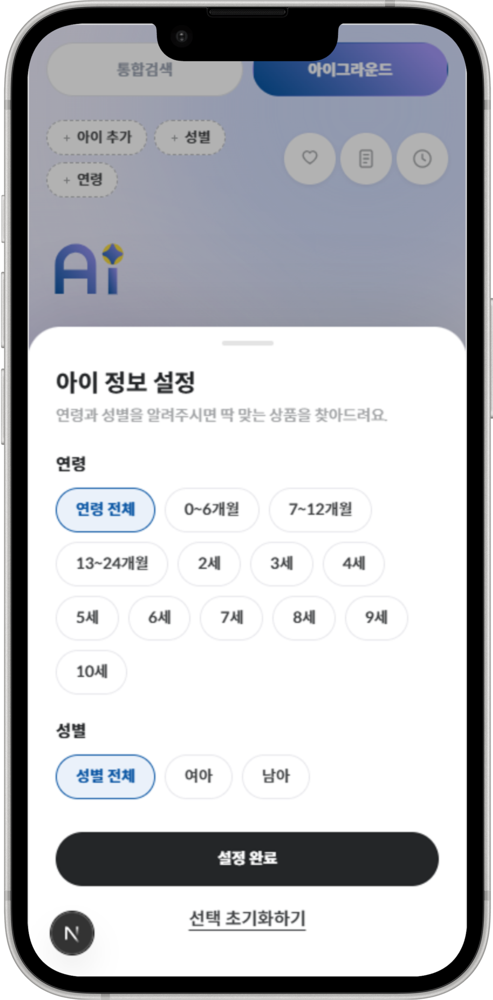
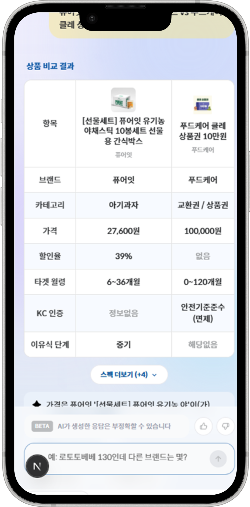

직접 검색해도 원하는 상품이 안 나오던 키디키디 통합검색을, 부모가 대화로 물으면 진짜 리뷰로 '확신'을 주는 AI 검색 서비스(코드명 키둥이 · 서비스명 아이그라운드)로 재설계한 프로젝트. 문제 정의 → VOC 리서치 → 인사이트 → 화면 설계 → 개발·데이터 협업까지 전 과정을 주도했습니다.
시작점은 하나의 문장이었습니다 — "직접 검색해도 원하는 상품이 안 나온다." 유아동 카테고리는 상품이 폭증했지만, 기존 키디키디 통합검색은 정확한 상품명을 알아야 도달할 수 있었습니다. 정작 부모는 상품명이 아니라 상황과 고민으로 묻습니다.
즉 "검색을 더 정확하게"가 아니라, 부모가 사고하는 방식(상황·고민)으로 상품을 만나게 하는 새 경험을 정의하는 일이었습니다.
만들기 전에 부모가 상품을 어떻게 말하는지부터 조사했습니다. 정량 VOC와 정성 인터뷰·관찰을 병행해, 숫자만으로는 안 보이는 신뢰가 깨지는 지점을 찾는 데 집중했습니다.
특히 부모가 실제로 쓰는 '한 줄'을 뽑아내려고, 상품 자체가 아니라 상품을 남에게 소개하는 순간을 질문했습니다.
"아이 옷 하나 골라 친구한테 링크 보낼 때, 뭐라고 써서 보내요?"
"당근마켓에 아이 옷을 팔면서 한 줄 소개를 쓴다면 뭐라고 쓰시겠어요?"
"LLM 추천을 받아봤다면, 어떤 때 부정확하다고 느끼셨나요?"
이 질문들이 다음 인사이트의 결정적 단서가 됐습니다 — 부모가 서로에게 상품을 건넬 때 붙이는 말은 스펙이 아니라 "이건 믿고 사도 돼"라는 확신이었습니다.
일반적인 AI 상품검색과 결정적으로 달랐던 지점이 여기서 드러났습니다. 처음의 가정은 틀렸고, 그걸 뒤집은 게 이 프로젝트의 핵심입니다.
상품을 정확히 찾아 나열할수록, 부모는 그걸 판매를 위한 노출로 느꼈습니다. 정확도만으로는 신뢰가 오히려 떨어졌습니다.
부모가 원한 건 더 많은 후보가 아니라 "이건 사도 된다"는 근거. 그 근거는 스펙이 아니라 다른 부모의 실제 후기에서 나왔습니다.
부모가 원한 건 더 정확한 검색이 아니라,
사도 되는지에 대한 '확신'이었다.
인사이트를 세 개의 실행 과제로 옮겼습니다. 원칙은 하나 — 상품을 '노출'하지 말고, 부모가 결정할 수 있게 '확신'을 붙여 제시한다.
상품만 나열하지 않고 "왜 이걸 고르는지" 기준(가성비·실용성 등)을 함께 제시 — 검색 결과가 아니라 상담이 되게
실제 후기에서 확신을 주는 한 줄을 뽑아 추천 근거로 노출 — "광고"가 아니라 "먼저 써본 부모의 말"로
아이 정보(연령·성별)로 추천을 개인화 — 부모가 "내 아이 얘기"로 받아들이게
솔직하게 남긴 한계. 초기엔 선택 가이드 안에서 사용자별 개인화가 부족했습니다 — 나이·성별이 충분히 반영되지 않아 "내 얘기" 같지 않았습니다. 이를 키디 크루 후기와 브랜드별 사이즈 리뷰에서 나이를 역추정해 큐레이션에 반영하는 방식으로 보강했습니다.
설계를 실제 화면으로 옮긴 결과입니다. 진입부터 개인화, 비교까지 "확신을 주는 상담" 경험을 일관되게 담았습니다.



※ 실제 서비스(아이그라운드) 화면 캡처. 이미지 파일을 넣으면 위 프레임에 자동 표시됩니다.
"확신"은 화면 카피가 아니라 데이터 구조에서 나옵니다. 개발·데이터 부서와 협업해, 큐레이션이 신뢰를 담보하도록 세 가지 원칙을 뒷단에 심었습니다.
LLM은 상품·가격·재고를 생성하지 않음. 상품은 하이브리드 검색(RAG)이 찾고, LLM은 설명·확신만 — 없는 걸 지어내지 않음
유아동이라 KC 인증·월령·소형부품·알레르기 안전 규칙이 검색 유사도보다 우선하는 하드 필터로 동작
상품·리뷰를 정규 태그 체계로 구조화 — 상황 질의를 상품으로 잇고, 리뷰에서 확신 문장을 뽑는 토대
이 뒷단 설계를 외부 개발사 · 데이터팀 · MD · IT플랫폼팀에 각 부서의 언어(기능 명세 · 태그 스키마 · 화면·일정)로 번역해 전달하며 프로젝트를 리딩했습니다.
현재 서비스 오픈 전(진행 중)으로, 아래는 확정 성과가 아니라 오픈 전 시점의 검증·리서치 지표입니다.
"검색이 안 된다"는 문제를 VOC 3만 건으로 재정의하고, '확신'이라는 핵심 가치를 정의
선택 가이드·개인화·비교 화면과 정책을 설계하고, 안전·예외 처리까지 명세
외부 개발사·데이터팀·MD·IT플랫폼팀을 각 부서 언어로 리딩하며 구현을 이끎
육아 커머스에서 AI의 성패는 "얼마나 잘 찾느냐"가 아니라 "부모에게 확신을 주느냐"였습니다. 상품을 노출하면 광고가 되고, 먼저 써본 부모의 진짜 후기와 내 아이 맞춤을 얹으면 신뢰가 됩니다. AI는 수단이었고, 진짜 설계는 불안한 부모에게 '사도 된다'는 확신을 어떻게 만들 것인가였습니다.